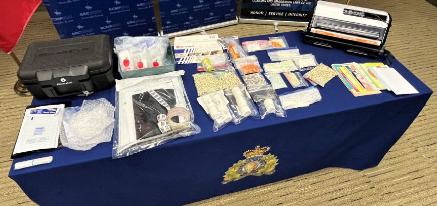
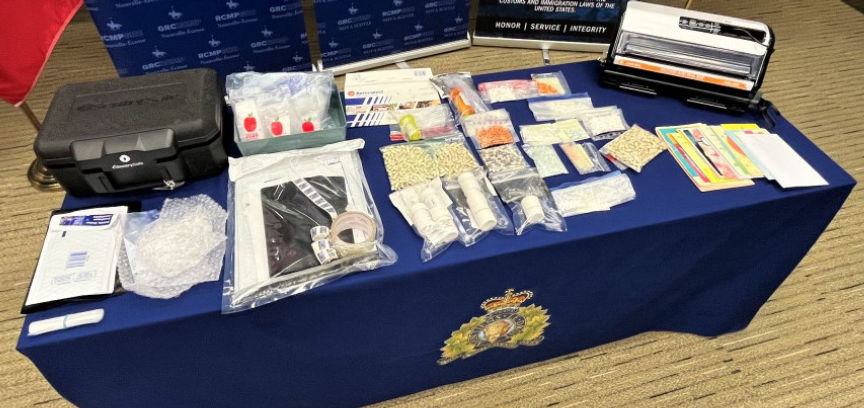

Canadian Drugs Vendor Busted
Authorities in Nova Scotia, Canada, with help from the HSI, arrested and charged a man suspected of distributing prescription drugs through the dark web.

John Nicholas Allen-Simec, 37, of Halifax, is accused of distributing ketamine, MDMA, Xanax, and other drugs throughout Canada and the United States via an undisclosed vendor profile.
The Nova Scotia RCMP Federal Serious and Organized Crime (FSOC) arrested Allen-Simec following an operation dubbed Operation Hackstone. The operation was launched in February 2023 after the HSI informed Canadian authorities of a suspected dark web drugs vendor based in Nova Scotia exporting opioids to the US.
The use of undercover purchases and surveillance reportedly led to the identification of Allen-Simec. Authorities in Canada and the US also intercepted several drug packages mailed by the defendant.
The investigators executed search warrants at various locations associated with Allen-Simec's drug trafficking operation on August 30. The searches resulted in the seizure of undisclosed quantities of hydromorphone, Dexedrine, ketamine, MDMA, Xanax, and other prescription drugs. They also seized a Toyota Rav4, electronic devices, and packaging and mailing material.
Forensic analysis of the electronic devices allegedly resulted in the recovery of drug trafficking evidence. The investigators also found and gained access to Allen-Simec's crypto wallets.
Allen-Simec was consequently charged with two counts of possession of a controlled substance for trafficking, two counts of possession of a controlled substance for exporting, six counts of exporting a controlled substance, and four counts of trafficking a controlled substance.
He was released on bond and will appear before the Halifax Provincial Court on November 6, 2023.

Drugs and other items seized from the vendor
John Nicholas Allen-Simec, 37, of Halifax, is accused of distributing ketamine, MDMA, Xanax, and other drugs throughout Canada and the United States via an undisclosed vendor profile.
The Nova Scotia RCMP Federal Serious and Organized Crime (FSOC) arrested Allen-Simec following an operation dubbed Operation Hackstone. The operation was launched in February 2023 after the HSI informed Canadian authorities of a suspected dark web drugs vendor based in Nova Scotia exporting opioids to the US.
The use of undercover purchases and surveillance reportedly led to the identification of Allen-Simec. Authorities in Canada and the US also intercepted several drug packages mailed by the defendant.
The investigators executed search warrants at various locations associated with Allen-Simec's drug trafficking operation on August 30. The searches resulted in the seizure of undisclosed quantities of hydromorphone, Dexedrine, ketamine, MDMA, Xanax, and other prescription drugs. They also seized a Toyota Rav4, electronic devices, and packaging and mailing material.
The 2021 Toyota Rav4
Forensic analysis of the electronic devices allegedly resulted in the recovery of drug trafficking evidence. The investigators also found and gained access to Allen-Simec's crypto wallets.
Quote:Magdalena Sigur, Homeland Security Investigations
Criminal actors are relentless in their attempts to exploit the anonymity of the Dark Web to traffic illicit drugs into our communities. The global nature of cyber-enabled crime commands strong partnerships between Homeland Security Investigations and our international law enforcement partners. Operation Hackstone is an excellent example of HSI's close partnership with Nova Scotia RCMP and the results that can be accomplished through international unified efforts.
Allen-Simec was consequently charged with two counts of possession of a controlled substance for trafficking, two counts of possession of a controlled substance for exporting, six counts of exporting a controlled substance, and four counts of trafficking a controlled substance.
He was released on bond and will appear before the Halifax Provincial Court on November 6, 2023.